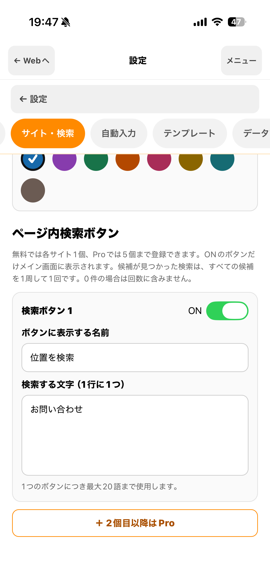
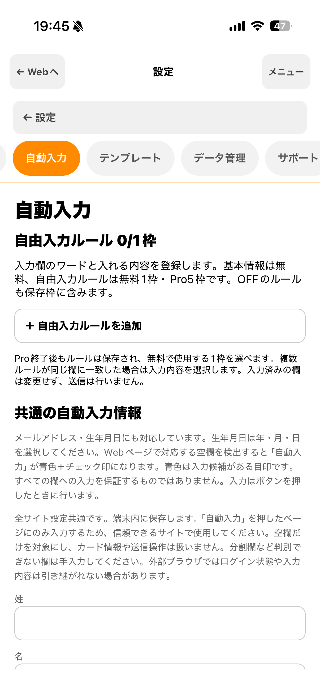
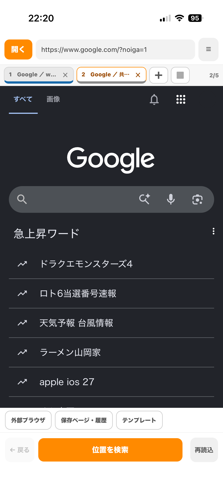
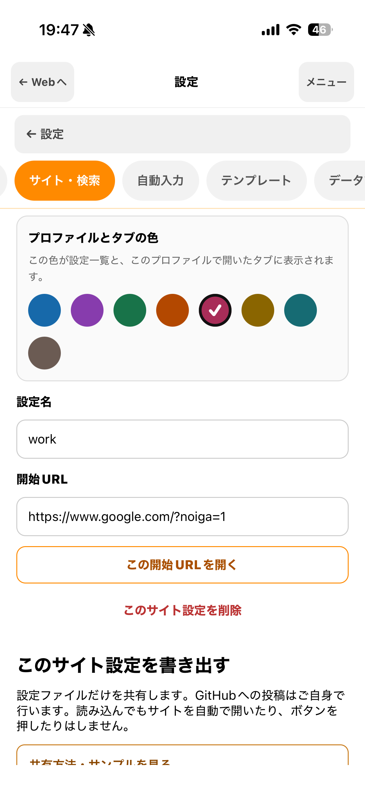

iPhoneでのWeb操作をもっとスムーズに
よく使うサイトの検索設定や入力ルールを保存して、ボタン・リンクの検索、複数ページのタブ切替、自動入力、定型文の挿入に使えます。
- ボタン・リンクをページ内検索
- 複数のページをタブで切り替え
- 入力欄への自動入力・定型文の挿入
無料プランから利用できます。Proは日本のApp Storeで月額900円（自動更新）です。購入前にApp Storeの確認画面で価格と更新条件をご確認ください。料金の詳細を見る
App Store 公開準備中
LIKEASSISTでできること
4つの機能を、実際の画面で紹介。
ページの構造やサイト側の制限により、一部の機能を利用できない場合があります。
ページ内検索
探したいボタンやリンクを、文字から見つける。
検索文字をサイトごとに登録しておくと、その文字を含むボタンやリンクへ移動できます。候補が複数あるときは、検索ボタンを押して順に確認できます。登録内容は端末内に保存されます。
ページ内検索の詳細を見る →
サイトごとに検索文字や表示名を設定
自動入力・テンプレート
入力欄に合わせて自動入力。定型文も挿入。
入力欄のラベルなどに含まれる目印と、入力したい内容を登録できます。自動入力はボタンを押したときに実行し、入力済みの欄は上書きしません。定型文は入力欄で選んで挿入します。フォームは送信しません。
定型文・入力支援の詳細を見る →
入力欄に合わせたルールを登録
タブ切替
複数のページを開いたまま、すばやく切り替え。
買い物ページと問い合わせページなどを別々のタブで開き、上部のタブ名をタップして切り替えます。タブはページを開いたまま行き来する機能です。検索文字や開始URLなどをまとめるプロファイルとは別です。

上部のタブ名をタップしてページを切り替え
サイト別設定（プロファイル）
よく使うサイト設定を、名前と色で整理。
検索文字や開始URLをサイト設定ごとに保存できます。プロファイルの作成は必須ではありません。必要な設定だけをファイルに書き出して別の端末へ移せます。ログイン情報や自動入力の登録値は共有ファイルに含まれません。
プロファイルの使い方を見る →
プロファイルはサイト別設定を整理する機能
よくある疑問
Safariの検索や、他の入力支援と何が違う？
サイトごとに設定を保存
Safari標準のページ内検索では、検索文字をサイト設定として保存しません。LikeAssistでは、サイトごとに検索文字、ボタンの表示名、有効／無効を保存し、次回も同じ設定を使えます。
入力欄に合わせて選べる
入力欄に表示されたラベルなどの文字を目印にして、入れる内容を選びます。決まった文章を自分で選んで挿入するテンプレートも使えます。
候補を順番に確認
一致する候補が複数ある場合は、検索ボタンを押すたびに次の候補へ移動します。見つけた後にボタンを押すなどの操作は、ご自身で行います。
GET READY IN THREE STEPS
使いはじめは、シンプルに。
アプリを使い始めるときは、次の手順で設定できます。
Webページを開く
URLを入力するか、お気に入りからページを開きます。リンクの長押しで新しいウィンドウまたは別タブを選べます。
必要な設定を登録
検索する文字や入力内容を登録します。使いたい機能から設定できます。
候補を確認して操作
検索候補への移動や空欄への入力を支援します。内容を確認し、必要な操作はご自身で行います。
Plans
まずは無料で。必要になったらProへ。
| 項目 | 無料 | LikeAssist Pro |
|---|---|---|
| ページ内検索 | 1日10回 | 1日100回 |
| サイト設定（プロファイル） | 3件 | 20件 |
| 各サイトの検索ボタン | 1件 | 5件 |
| Webタブ | 3個 | 5個 |
| 自由入力ルール | 1枠 | 合計5枠 |
| 基本の自動入力・テンプレート | 両プランで利用可 | |
| プロファイルの保存・読み込み | 両プランで利用可（各プランの登録上限内） | |
日本のApp StoreでのProの価格は月額900円です（自動更新）。検索は最初の候補へ移動した時点で1回と数え、残りの候補を順に見る間は追加で数えません。途中でやめても、その1回は記録されます。候補が0件の場合は数えません。購入前にApp Storeの確認画面で価格と更新条件をご確認ください。
Privacy & control
入力・送信の前に、自分で確認できます。
端末内に保存
設定や履歴などのアプリデータは端末内に保存します。Webページを開くと閲覧先サイトと通信します。共有設定の読み込みでは、そのファイルを公開するサービスとも通信します。詳しくはプライバシーポリシーをご覧ください。
明示的に操作
自動入力は利用者がボタンを押したときだけ実行し、フォームは送信しません。パスワード、認証コード、カードや口座などの決済・金融情報の入力欄は、基本の自動入力と自由入力ルールの対象から除外します。
サイトのルールを尊重
各Webサービスの利用規約やルールを確認してご利用ください。LikeAssistは、第三者が提供するWebサービスの公式アプリではありません。
GOOD TO KNOW
気になること、先に確認。
どのサイトでも使えますか？
すべてのサイトや画面での動作は保証できません。ページ構造やサイト側の制限により、検索・入力支援が利用できない場合があります。ページ内検索は文字を含むボタン・リンクが対象で、画像だけのボタンなどは見つからない場合があります。
ボタン操作やフォーム送信を自動で行いますか？
行いません。検索は一致するボタンやリンクへの移動を支援します。自動入力も利用者がボタンを押したときに行い、送信操作は利用者自身で行います。
Safariの検索機能で十分ではありませんか？
Safari標準のページ内検索では、検索文字をサイト設定として保存しません。LikeAssistでは、サイトごとに検索文字や表示名を保存して繰り返し使えます。入力欄の目印に応じて内容を入れる自由入力ルールや、選んで使うテンプレートも利用できます。
Proを解約すると設定は消えますか？
追加設定の内容も保存されます。無料枠を超える部分は利用が制限され、再開すると再び利用できます。自由入力ルールは無料で使用する1枠を選べます。
どこからダウンロードできますか？
App Storeで公開後、このページにダウンロードリンクを掲載します。
LikeAssist
よく使うWebページを、もっと使いやすく。
操作方法やご質問はサポートページをご覧ください。App Storeで公開後、このページからアプリをご案内します。
LikeAssistは第三者Webサービスの公式アプリではありません。各サービスとの提携・承認・後援を示すものではありません。